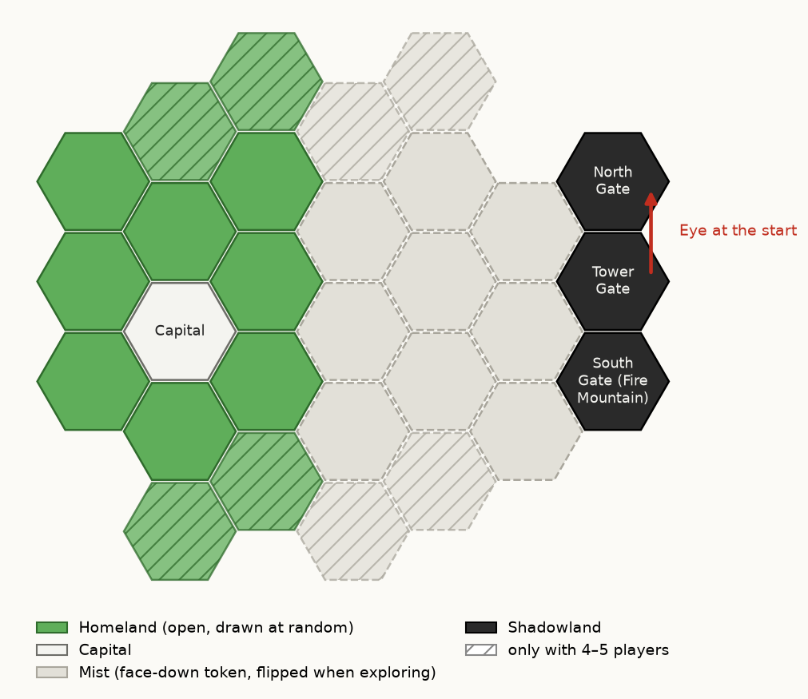

Beacons – Quick Rules
These are the rules printed on the rule boards in the lid of the box. In the browser version, the game sets up the map for you.
Setup

With magnets: 1. Place the capital. Each player picks a color and a people (each people once; first game without). Coastfolk: choose a homeland space for 1 water tile (place it once a neighbor lies there), remove its token.
With base plate: 1. Join the base plate, the capital goes in its marked hex. Each player picks a color and a people (each people once; first game without). Coastfolk: 1 water tile on a homeland space of their choice, remove its token.
2. With 2 or 3 players use only 3 each of forest, fields, pasture, hills, mountains, 1 water, the ruin and their tokens.
With magnets: 3. Tokens into the mist container. For each free homeland space draw one blind, place that tile, remove the token; a ruin goes back, draw again. If a tile repels: turn it 60°.
With base plate: 3. Tokens into the mist container. For each free homeland space draw one blind, put that tile in its hex, remove the token; a ruin goes back, draw again.
 Forest: wood
Forest: wood  Fields: grain
Fields: grain  Pasture: horses
Pasture: horses  Hills: stone
Hills: stone  Mountains: ore
Mountains: ore
With magnets: 4. As a spacer lay 3 spare tiles from the homeland to the Tower Gate, snap the Shadowland on (North Gate at the top, South Gate with Fire Mountain at the bottom), remove the 3.
With base plate: 4. Shadowland into the hexes N, T, S: North Gate, Tower Gate, South Gate with Fire Mountain.
5. Shuffle the other tokens face down, one on each mist space.
6. Tower with 4 segments on the Tower Gate (5 with 4 or 5 players), Eye toward the North Gate. Companions on START. Shuffle the fate cards (“cards”).
7. Draw 2 heroes, keep 1 face up (with 5 players draw 1).
8. The youngest starts (flag): in turn order 1 farm between two homeland tiles (the capital counts), then in reverse a second one, which gives 1 resource per terrain hex it touches. Fame markers on 2.
Goal and end
2–5 players, in teams 4, 6 or 8. Tower completed (8 segments): everyone loses. Companions on space 10: finish the round including its end; most fame wins (tie: more resources, else shared).
Peoples
Humans: in raids each of your horses counts double.
Elves: for 1 grain turn the die you took to any terrain.
Dwarves: beacons cost 1 stone less.
Halflings: when you move the Companions onto a space with an Eye, the tower does not grow.
Coastfolk: with a building at the water: trade 2 : 1.
Team game
Two players share a color and a people, take turns and win together; each color counts as one player (also for tiles, dice and tower). Each person draws 1 hero, both belong to the color. The tower starts 1 segment higher.
Heroes and cards
Heroes act once per game, on your own turn (Diviner and Scholar right after the rune roll, in turn order from the first player); then turn them sideways. Cards: at most 3 in hand, extras under the deck; play on your own turn (Allies in a raid), then under the deck. The Messenger is not the journey of the round (the Companions may still move by themselves at the end of the round).
Tips
First game: keep ore and horses ready for raids, they also bring fame. A farm at the capital allows trade 2 : 1. On journey spaces 4 and 8 the tower grows for sure: think of beacons and the Call early.
Round
1. The first player rolls 5 dice (6 with 5 players) in the upturned lid. Diviner and Scholar act now. Then for each Eye: turn the spire clockwise to the next gate (North, South, Tower Gate = looking west), a horde appears there. Set the Eyes aside.
2. In turn order from the first player: take 1 die and harvest: your buildings yield per hex of that terrain farm 1, castle 2, fortress 3; if the die yields anything, 1 more. No die left: 1 resource of your choice. Then build, trade, travel, play cards and your hero as often as you like.
3. End of round: everyone harvests the remaining dice (without the 1 more). Hordes move 1 hex toward the capital; equally short: the first player chooses. Raids. If nobody traveled, the Companions move 1 space by themselves (no cost, no fame). The player with the least fame becomes first player (tie: of them, the next to the left).
Building
Buildings (farm, castle, fortress) stand on edges between two tiles, one per edge, never at the Shadowland. Your realm: all hexes at your buildings; new farms go on its free edges. Castle on your own farm, fortress on your own castle. Costs: player aid.
Exploring: a farm at a mist token: first flip it, place that tile there (under a horde), remove the token, draw 1 card.
Fame goes on the track at once: farm 1, upgrade +1, beacon 2. A building that loses a level (down to off the board): −1. All lost: your next farm between two homeland tiles.
Trade
Freely with the player whose turn it is; with the supply 3 of a kind for 1, with a building at the capital 2 for 1. What is not in the supply does not exist; too little for a harvest: in turn order from the first player. Hordes do not block harvests.
Shadow
Hordes move only across tiles and tokens. Several hordes on one hex: one figure, a ring under it for each extra one, its figure back to the supply; each figure and each ring is one horde. No figure or ring left: tower +1. In the mist hordes stand on the token. When the tower grows, put the spire back facing the same way.
Raids at hexes with buildings, always at the capital. Strength 2 per horde. Defense: 1 per castle, 2 per fortress (whoever owns them). If it is short, the owners at the hex may pay in turn order from the first player, with a beacon everyone, only with ore and horses: 1 defense and 1 fame each. Each names an amount once, together never more than needed (Allies and a Humans' horse may overpay). Payment goes to the supply.
Enough: hordes back to the supply. Otherwise: tower +1, each building at the hex loses a level, the hordes stay. At the capital they always go back to the supply afterwards.
Beacons
Building: a free corner of three tiles at a mountain or hill in your realm, not at the Shadowland; each mountain and hill at most one. It belongs to nobody and always burns: everyone may pay in raids at its three hexes and their neighbors.
Call: with the third beacon, once per game: tower −1, its builder: 3 fame.
Raid example: 2 hordes (strength 4) at a forest with Red's castle (defense 1): 3 short. Red is first player and pays 1 ore (1 fame). A beacon burns at a neighboring hex, so Blue may pay too: 2 horses (2 fame). Held: hordes back to the supply.
Journey
At most 1 space per round, on your own turn, whoever pays first; cost and fame on the track. Spaces with an Eye (4, 8), also when moving by themselves: tower +1, but it never completes the tower. Moved? Turn the Companions sideways, upright at the very end of the round.
At the table, this is printed on the player aid, the journey track and the cards.
Building costs (player aid)
| Build | Cost | Fame |
|---|---|---|
| 1 | ||
| +1 | ||
| +1 | ||
| 2 |
Raid (player aid: shield = ore / horse, +1): each point of defense costs 1 ore or 1 horse and brings 1 fame.
Journey track
Whoever moves the Companions onto a space pays its cost and gets its fame. Space 10 is the Fire Mountain.
| Space | Cost | Fame | Danger |
|---|---|---|---|
| 1 | 1 | ||
| 2 | 1 | ||
| 3 | 1 | ||
| 4 | 2 | ||
| 5 | 2 | ||
| 6 | 2 | ||
| 7 | 2 | ||
| 8 | 3 | ||
| 9 | 3 | ||
| 10 | 4 |
Resources:  wood
wood  stone
stone  ore
ore  grain
grain  horses
horses
Hero cards
Back of each card: Once per game, on your own turn or as the card says. Then turn it sideways.
 Master of CardsDraw 3 fate cards and keep 2.
Master of CardsDraw 3 fate cards and keep 2. DivinerRight after the rune roll: turn up to 2 dice to any side. +2 fame.
DivinerRight after the rune roll: turn up to 2 dice to any side. +2 fame. TinkererBuild a castle for 1 stone and 1 ore.
TinkererBuild a castle for 1 stone and 1 ore. PlannerOn your turn, take 2 dice instead of 1 and harvest both.
PlannerOn your turn, take 2 dice instead of 1 and harvest both. Warden of NatureSend a horde back to the Tower Gate. +1 fame.
Warden of NatureSend a horde back to the Tower Gate. +1 fame. ScholarPax vobiscum: the Eyes of one rune roll do not count. +2 fame.
ScholarPax vobiscum: the Eyes of one rune roll do not count. +2 fame. PathfinderAs the journey of the round: 1 space, free and safe, with fame. Not onto 10.
PathfinderAs the journey of the round: 1 space, free and safe, with fame. Not onto 10. ChroniclerA horde next to the capital goes back to the supply. +2 fame.
ChroniclerA horde next to the capital goes back to the supply. +2 fame.
Fate cards (2 of each)
Back of each card: Exploring: 1 card. At most 3. Only on your own turn, then to the bottom of the deck.
 MessengerCompanions move 1 extra space now. You pay and get the fame.
MessengerCompanions move 1 extra space now. You pay and get the fame. Rich HarvestHarvest your die a second time.
Rich HarvestHarvest your die a second time. BanishmentSend a horde back to the Tower Gate.
BanishmentSend a horde back to the Tower Gate. WatchfireBuild a beacon without wood.
WatchfireBuild a beacon without wood. CaravanTrade with the supply 1 for 1, up to 3 times.
CaravanTrade with the supply 1 for 1, up to 3 times. Allies+3 defense in a raid where you may pay.
Allies+3 defense in a raid where you may pay.